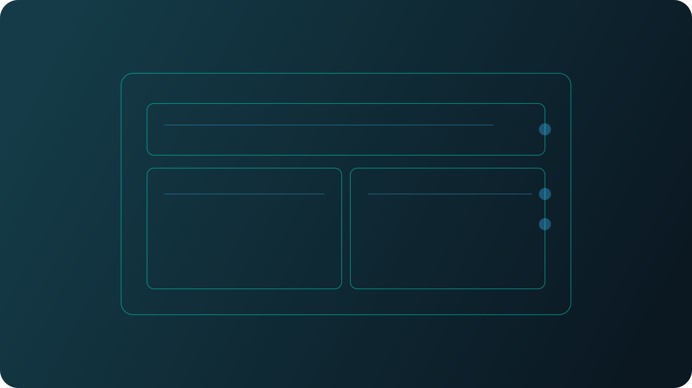
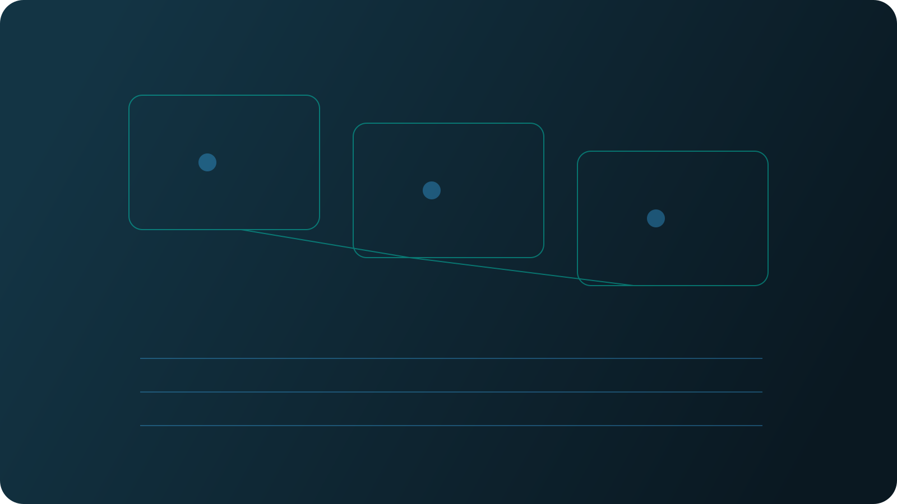

Brand & Communication
- Brand identity and visual communication
- Advertising and art direction
- Presentation design
Creative Technologist & Digital Product Builder
Creating practical digital products, intelligent workflows and user-friendly business solutions.
About
I’m a creative technologist and digital product builder based in the UAE, with more than 20 years of experience across graphic design, branding, advertising, visual communication, print and production.
My work has given me a strong understanding of how ideas move from concept through approval, production and final delivery. In recent years, I have expanded that experience into digital products, business workflows and AI-enabled development.
I enjoy combining creative judgment with practical technology to make complex ideas clearer, more useful and easier to experience.
What I Build
I design and shape practical digital products and intelligent workflows that make information clearer, reduce manual work and support better day-to-day decisions.
Selected Work
A selection of products and workflows shaped around real operational challenges and everyday work.
Case study 01
A connected workspace planned around sales, quotations, invoices, inventory, procurement, HR, approvals and reporting.

Case study 02
A focused notification experience that helps managers stay informed about assigned Business Central activity on desktop and mobile.
Case study 03
A structured agency workflow connecting briefs, campaigns, tasks, estimates, proposals, production, accounts and job closing.

Case study 04
Focused utilities for recurring design-production tasks, including mockups, brand kits, image processing, estimation, email building, vectors and QR codes.
Experience
More than two decades across design, production, creative operations and digital products.
Senior Graphic Designer · UAE
Dates to be confirmed
Branding, advertising, digital, print and production design for demanding commercial work, including experience with Emirates NBD, EMAAR and Burj Al Arab projects.
Art direction · Campaign design · Artwork preparation · Production coordination
Graphic Design, Branding & Production
Dates and locations to be confirmed
A hands-on foundation in visual communication, advertising, campaign development, prepress and print production.
Design development · Prepress · Large-format production · Final artwork